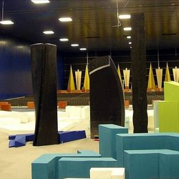
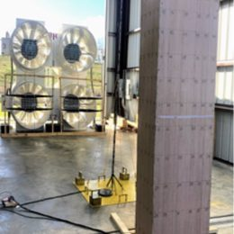
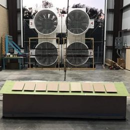
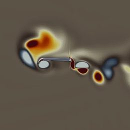
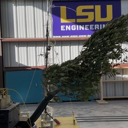
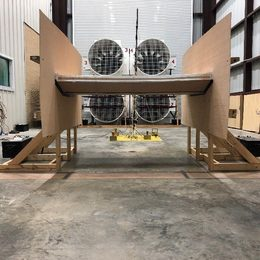
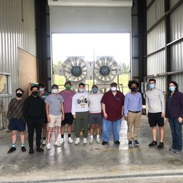
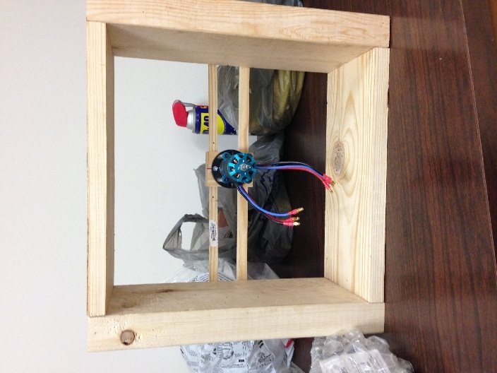
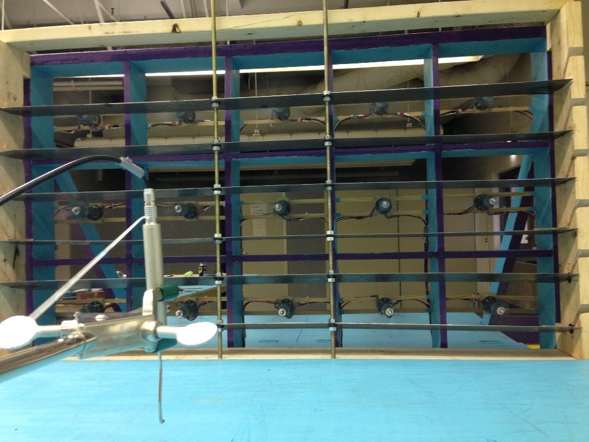
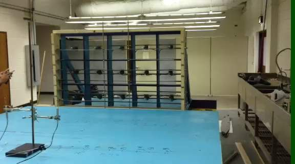

Facilities
Where the group tests: the large-scale open-jet hurricane testing facility at LSU and the laboratories used for structural control and wind tunnel work.
The LSU WISE open-jet facility
A wall-free jet with a 4 m by 4 m test section that reproduces complete atmospheric boundary-layer turbulence at Reynolds numbers up to 2.3 × 106, depending on the test model. Its integral length scales are about ten times those of conventional small-scale testing, and its velocity spectra agree well with established formulations. The facility supports testing of buildings, solar arrays and other renewable energy installations, wind turbines, bridges, and power transmission lines. The open-jet setup also allows destructive testing at high wind speeds and makes it easy to add water spray for wind-driven rain studies. Select a photo to enlarge it.
Open-jet instrumentation includes two Cobra probes for three-component velocity, five accelerometers, two load cells, and a 256-channel pressure measuring system, with a shake table, four MR dampers, and a laser displacement sensor for smart-structure studies.
One facility, many applications
Application areas for large-scale open-jet testing, from a figure in Aly (2023). Select one to see related projects.

Urban planning
Façade design
Renewable energy
Aerospace and aviation
Wind–structure interaction
Sustainable infrastructure
STEM collaboration
Redesigned from a figure in Aly (2023), Applied Sciences, with the group’s own photographs.
Destructive and dynamic testing
Models taken all the way to failure in the open jet, and a decay test of a single-axis solar tracker.
How the facility was built
The open jet began as a Phase I prototype: a small 15-fan wind generator that Dr. Aly designed and built with his students, who presented its first results in 2014. Its atmospheric boundary-layer flow was validated with CFD and measurements (Aly and Gol-Zaroudi, Measurement, 2017). The large-scale facility followed, with a 2 × 2 array of large fans driving the 4 m by 4 m test section. As principal investigator, Dr. Aly led the eight-investigator team that established the large-scale facility (2016–2017), and he prepared the AutoCAD drawings of its components.




Results from the facility
Highlights are on the Research page; the full record is on Publications.
- Surface pressures agree closely with full-scale field data and run 25–300% higher than small-scale tests (Physics of Fluids, 2024).
- Rooftop solar panels reduced total wind-induced roof forces by 45–63% (Sustainable and Resilient Infrastructure, 2023).
- On a 1:50 high-rise model, mean cladding pressures matched conventional wind tunnels while peak pressures ran higher (ASCE, 2022).